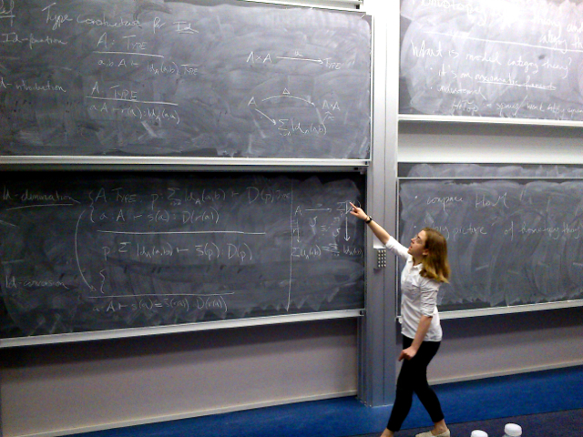

Paige Randall North
I am a Research Visiting Assistant Professor in the Mathematics Department at the Ohio State University, working with Sanjeevi Krishnan.
Before this, I did my PhD at the University of Cambridge under the supervision of Martin Hyland.
Before that, I was an undergraduate at the University of Chicago.
Research
I am interested in category theory, homotopy theory, and homotopy type theory. In particular, I am interested in model categories and understanding those which might serve as interpretations of homotopy type theory. In my PhD thesis, I develop the theory of such things - what I call Moore factorization systems for their resemblance to Moore’s description of the Hurewicz model structure on topological spaces.
Writings
- Univalent foundations and the equivalence principle, (2018) with Benedikt Ahrens, expository, to appear in Synthese, Springer
- Type theoretic weak factorization systems, (2017) my PhD thesis
- Towards a Topological Model of Homotopy Type Theory, (2015) In: González M., Yang P., Gambino N., Kock J. (eds) Extended Abstracts Fall 2013. Trends in Mathematics. Birkhäuser, Cham
- Some degenerate weak categories, (2011) undergraduate project
- A foundational category, (2010) undergraduate project
Talks
Future
- Theory Seminar, University of Birmingham, 8 June 2018.
- Conference on types for proofs and programs, "A type theory for directed homotopy theory", University of Minho, 18-21 June 2018.
- Workshops on Homotopy Type Theory/Univalent Foundations and Higher-Dimensional Rewriting and Algebra, "A homotopy type theory for directed homotopy theory", University of Oxford, 7 July 2018.
Past
- Midwestern HoTT Seminar, "A directed homotopy type theory," University of Western Ontario, 26 May 2018.
- AMS Spring Central Sectional Meeting, , Ohio State University, 17 March 2018.
- Joint Mathematics Meetings, , San Diego, 11 January 2018.
- Welcome Seminar, "Type theory and homotopy theory," Ohio State University, 30 November 2017.
- Category Theory Octoberfest, "Comprehension categories and weak factorization systems," Carnegie Mellon University, 28 October 2017
- Topology Seminar, "An introduction to the relationship between type theory and homotopy theory," Ohio State University, 17 October 2017.
- Stockholm Logic Seminar, "Weak factorization systems and display map categories," Stockholms universitet, 5 April 2017.
- EUTypes meeting, "Categories of display map categories," Univerza v Ljubljani, 31 January 2017.
- Foundations of Mathematics: Univalent Foundations and Set Theory, "Models of Type Theory," Zentrum für interdisziplinäre Forschung, Bielefeld, 20 July 2016.
- Workshop on Homotopy Type Theory and Univalent Foundations of Mathematics, "Topological models of dependent type theory," The Fields Institute, Toronto, 20 May 2016.
- Categorical homotopy theory lecture series, Capital Normal University, Beijing, 29 June - 3 July 2015.
- Category Theory 2015, "Weak factorization systems for intensional type theory,” University of Aveiro, 19 June 2015.
- Fifth Workshop on Formal Topology, "Weak factorization systems for intensional type theory," Institut Mittag-Leffler, Stockholm, 9 June 2015.
- Category Theory Seminar, "Weak factorization systems for intensional type theory," University of Cambridge, 12 May 2015.
- PSSL 96, "Moore factorization systems," Universita degli Studi di Palermo, 12 October 2014.
- Junior Category Theory Seminar, "Moore factorization systems," University of Cambridge, 9 October 2014.
- Category Theory 2014, "Moore factorization systems," University of Cambridge, 4 July 2014.
- Junior Category Theory Seminar, "Homotopy type theory and weak factorization systems,” University of Cambridge, 6 March 2014.
- Category Theory Seminar, "Towards a topological model of homotopy type theory,” University of Cambridge, 26 November 2013.
- Conference on Type Theory, Homotopy Theory and Univalent Foundations, "Towards a model of homotopy type theory in topological spaces," Centre de Recerca Matemàtica, Barcelona, 23 September 2013.
- Young Researchers in Mathematics, "Model category theory and homotopy type theory," University of Edinburgh, 17 June 2013.
- Young Women in Topology, "A framework for constructive homotopy theory," Universität Bonn, 8 June 2013.
-
Joint Category Theory and Computer Science Seminar, "Computational homotopy theory," University of Cambridge, 30 May 2013.
- Junior Category Theory Seminar, "Model categories," University of Cambridge, 31 January 2013.
-
Algebraic Topology and Category Theory Proseminar, "Batanin ω-categories," University of Chicago, 22 November 2011.
- Graduate Student Conference in Logic, "Univalent foundations of mathematics," University of Illinois at Chicago, 8 May 2011.
Teaching
- Autumn 2018: MATH 2568 Linear Algebra
- Spring 2018: MATH 2366 Introduction to Discrete Mathematics
- Autumn 2017: MATH 2568 Linear Algebra
Material for these courses is hosted on carmen.
Organization
Contact
north.138@osu.edu
514 Math Tower
231 West 18th Avenue
Columbus OH, 43210